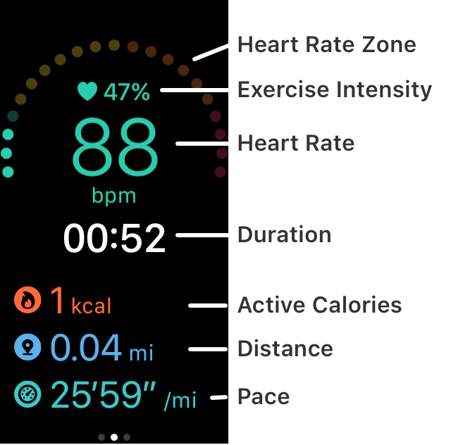
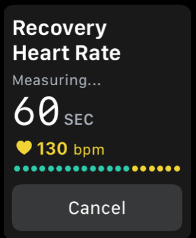

Help
Measuring workouts
- Start Zones app in Apple Watch.
- Select the type of workout and start.

- Zones and heart rate will be displayed during training.
With vertical scrolling, distance and active calories can be displayed.

- There is a "end" button on the first page of side-scrolling.
In addition , you can use this button on the screen Press and hold.
(If you set the automatic stop / resume and running, "pause" button does not appear)

- At the end, if your zone is over CARDIO, it will start the measurement of the recovery heart rate.
You can cancel this measurement at the bottom of this screen.

- At finished, the results is displayed.
If the exercise time is shorter than 30 seconds, will not be stored is regarded as a cancellation.
- Press the "Save" button.
It will be saved automatically after a lapse of more than one minute.